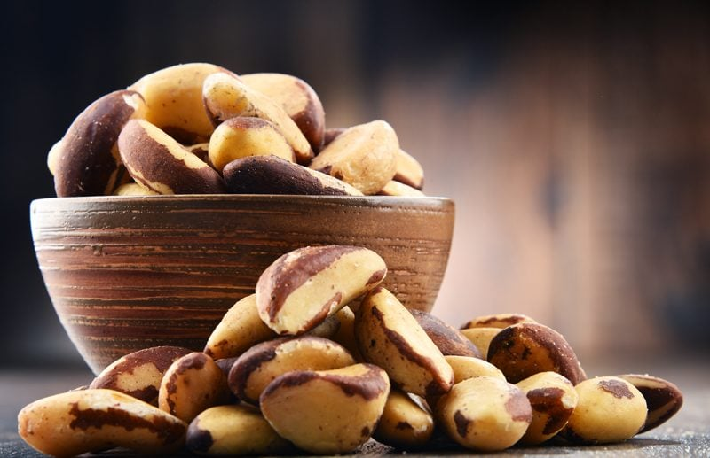

Brazil Nuts | Soaking and Drying
Did you know that the Brazil nut is a seed? They come packaged in a pod that is prickly, and each one weighs around two to four pounds. When the pod is split open, 12 to 24 Brazil nuts are packed together. Each nut is, in turn, encased within its own thick dark-brown color individual shell. Talk about a coat of armor!

Brazil nuts feature a three-sided shape with sweet, nutty-flavored white meat. They are known for their hefty amount of selenium; in fact, they have more selenium than any other nut… about 2,500 times as much! Selenium is a powerful antioxidant that protects cells from damage by free radicals, supports thyroid health, protects the immune system against infection, and may reduce joint inflammation.
This next bit of info was a bit of a shocker to me; you better sit down for this one… Brazil nuts are considered a complete protein, containing all 9 essential amino acids.
To soak or not to soak… there seem to be some conflicting answers to the question throughout the Internet. If you do your own Google research, you find that the majority of sites talk about soaking Brazil nuts. But there is a percentage that says not to. So what does one do!?
They do have a high amount of phytic acid in them, which makes it hard for digestion, so I am going to go with my gut on this one (pun intended) and soak them. Removing any little bit is a win in my book. Both Bob and I have noticed a big difference in how our stomachs feel after we eat nuts/seeds /grains that have been soaked and dehydrated.
Due to their high-fat content, they are prone to rancidity, so store them in the fridge or freezer if you plan to keep them around for a while. Fresh Brazil nuts are supposed to be ivory-white, if they have turned yellow, don’t eat them.
Ingredients:
- 4 cups raw Brazil nuts, shelled
- 1 Tbsp sea salt
- 6 cups water
Preparation:
Soaking:
- Place the Brazil nuts and salt in a large bowl along with the water.
- Leave them on the counter for 8-12 hours.
- Cover with a clean cloth and lay it over the bowl, this allows the contents of the bowl to breathe.
- Discard the nuts that float to the top, as they are likely to have some rancidity.
- After soaking, rinse thoroughly, and discard the water.
Dehydrator method:
- Spread the Brazil nuts on the mesh sheet that comes with the dehydrator.
- Keep them in a single layer and dry them at 115 degrees (F) until they are thoroughly dry and crisp.
- Make sure they are completely dry. If not, they could mold, plus they won’t have that crunchy, yummy texture you expect from nuts and seeds.
- The dry time will vary due to the machine you own, the type of climate you live in, and how full your dehydrator is when drying them.
- Expect anywhere from 12 + hours.
- Allow them to cool to room temperature before storing.
- Store in airtight containers such as mason jars. If you plan on using them within 3 months, you can store them in the fridge: anything longer, store in the freezer.
- I like to do a lot of nuts and seeds in a big batch to save time and energy when using my dehydrator. This way, I always have adequately prepared nuts and seeds on hand for snacks, salads, and recipes.
Oven method:
- Preheat the oven to 350 degrees (F).
- Spread the Brazil nuts on an ungreased cookie sheet in a single layer.
- Bake for 10-12 minutes.
- Don’t leave them unattended, due to their high oil content; they will continue to roast after you remove them from the oven.
- When toasted correctly, they taste toasted, not bitter or burnt.
- Cut one in half; they should be an even pale brown color throughout the nut.
- Cool for about 1 hour. Make sure that they are cool before storing them.
- Note ~ You can also attempt to dry them in the oven and keep them raw, but this is tricky. You will need to set the oven on the lowest setting, keep the door ajar and hang a thermometer in the oven to watch the temperature. Nothing is impossible. With this method… good luck and do your best. :)
© AmieSue.com